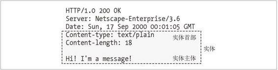
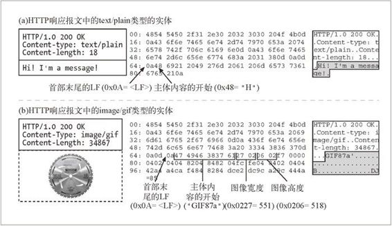

15.1 报文是箱子，实体是货物
如果把 HTTP 报文想象成因特网货运系统中的箱子，那么 HTTP 实体就是报文中实际的货物。图 15-1 展示了一个简单的实体，装在 HTTP 响应报文中。

图 15-1 报文实体由实体首部和实体主体组成
实体首部指出这是一个纯文本文档（Content-Type:text/plain），它只有 18 个字节长（Content-Length:18）。和往常一样，一个空白行（CRLF）把首部字段同主体的开始部分分隔开来。
HTTP 实体首部（参见第 3 章）描述了 HTTP 报文的内容。HTTP/1.1 版定义了以下 10 个基本字体首部字段。
Content-Type
实体中所承载对象的类型。
Content-Length
所传送实体主体的长度或大小。
Content-Language
与所传送对象最相配的人类语言。
Content-Encoding
对象数据所做的任意变换（比如，压缩）。
Content-Location
一个备用位置，请求时可通过它获得对象。
Content-Range
如果这是部分实体，这个首部说明它是整体的哪个部分。
Content-MD5
实体主体内容的校验和。
Last-Modified
所传输内容在服务器上创建或最后修改的日期时间。
Expires
实体数据将要失效的日期时间。
Allow
该资源所允许的各种请求方法，例如，GET 和 HEAD。
ETag 这份文档特定实例（参见 15.7 节）的唯一验证码。ETag 首部没有正式定义为实体首部，但它对许多涉及实体的操作来说，都是一个重要的首部。
Cache-Control
指出应该如何缓存该文档。和 ETag 首部类似，Cache-Control 首部也没有正式定义为实体首部。
实体主体
实体主体中就是原始货物啦。1 任何其他描述性的信息都包含在首部中。因为货物（也就是实体主体）只是原始数据，所以需要实体首部来描述数据的意义。例如，Content-Type 实体首部告诉我们如何去解释数据（是图像还是文本等），而 Content-Encoding 实体首部告诉我们数据是不是已被压缩或者重编码。我们将在随后的小节中讨论所有这些方面及更多的内容。
1 如果有 Content-Encoding 首部的话，实体主体的内容就已经被指定的内容编码算法进行过编码了，第一个字节就是编码（比如，压缩）后的货物的第一个字节。
首部字段以一个空白的 CRLF 行结束，随后就是实体主体的原始内容。不管内容是什么，文本或二进制的、文档或图像、压缩的或未压缩的、英语、法语或日语，都紧随这个 CRLF 之后。
图 15-2 展示了两个实际的 HTTP 报文的例子。一个携带着文本实体，另一个承载的是图像实体。十六进制的数值中展示的是报文的实际内容。

图 15-2 实际报文内容（紧随空白的 CRLF 之后的原始报文内容）的十六进制转储显示
在图 15-2a 中，实体主体从第 65 个字节开始，紧随首部末尾的 CRLF。实体主体中包含了“Hi! I'm a message!”这句话的 ASCII 编码字符。
在图 15-2b 中，实体主体从第 67 字节开始。实体主体包含了一个 GIF 格式图像的二进制内容。GIF 文件以 6 个字节的版本标志开头，后面是 16 位的宽度和 16 位的高度。可以在实体主体中直接看到这 3 项内容。